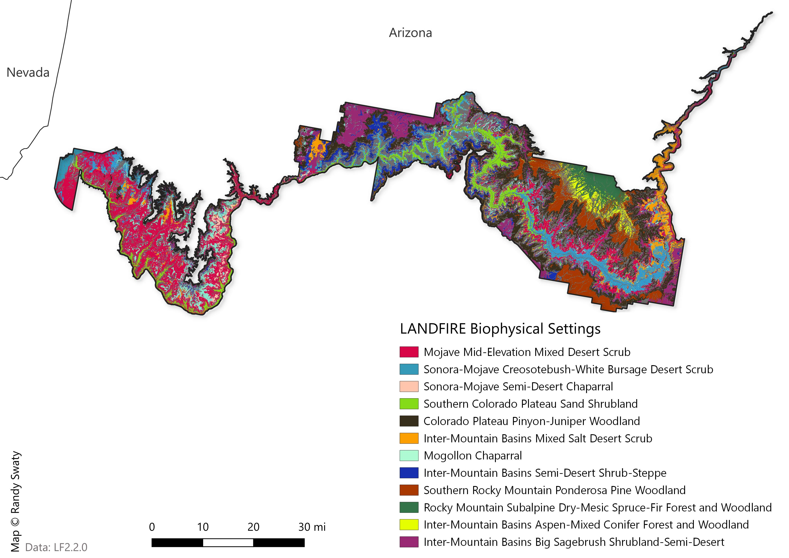
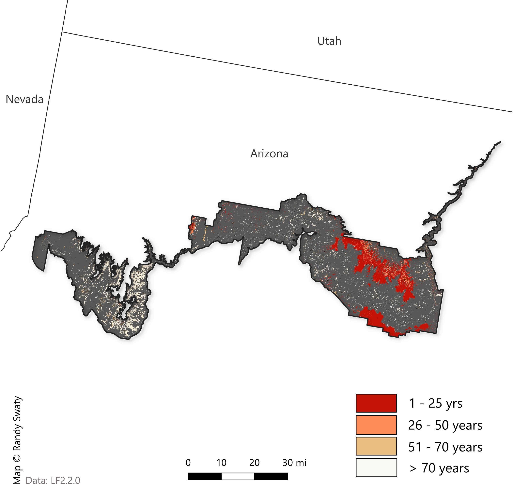

Past: Historical Ecosystems
LANDFIRE’s Biophysical Settings (BpSs)
BpS models represent the vegetation system that may have been dominant on the landscape prior to Euro-American settlement. These models are based on a combination of the current environment and an approximation of the historical disturbance regime. Read more.
Check out this 3-minute tutorial for a quick refresher on the basics of Biophysical Settings Models.
Use this page as a starting point to explore the most prevalent BpSs for the northern portion of the lower peninsula of Michigan. In addition to the charts and maps, the historical disturbance data can be directly accessed using this site.
Summary
- LANDFIRE Mapped 44 Biophysical Settings (BpS) in the area, with the top 10 types covering ~85% of the area. There was not one dominant type, presumably due to the extreme diversity of landforms, elevation and aspects.
- For the most prevalent BpSs, the historical fire return intervals were fairly long, ranging from ~800 years for the Mojave Mid-Elevation Mixed Desert Scrub to ~80 years for the Mogollon Chaparral. Notably the Southern Rocky Mountain Ponderosa Pine Woodland had a surface fire return interval of 10 years.
Most Prevalent Biophysical Settings

Historic Annual Acres Burned (per ecosystem)

Top Historical Fire Regimes

Historical Disturbances (per ecosystem, 10 most burned BpSs selected)
Data Table
| ZONE | BPS_MODEL | BPS_NAME | GROUPVEG | FRI_REPLAC | FRI_MIXED | FRI_SURFAC | FRG_NEW | ACRES | REL_PERCENT |
|---|---|---|---|---|---|---|---|---|---|
| 15 | 10820_12_15_16_17_23_24 | Mojave Mid-Elevation Mixed Desert Scrub | Shrubland | 815 | NA | NA | V-B | 198,161 | 16.4 |
| 15 | 10160_15_28 | Colorado Plateau Pinyon-Juniper Woodland | Conifer | 430 | 194 | 2,245 | III-B | 175,085 | 14.5 |
| NA | NA | Barren-Rock/Sand/Clay | Barren-Rock/Sand/Clay | NA | NA | NA | NA | 163,508 | 13.5 |
| 15 | 10804_6_12_15_16_17_18_23_24_25 | Inter-Mountain Basins Big Sagebrush Shrubland-Upland | Shrubland | 120 | NA | NA | IV-B | 92,898 | 7.7 |
| 15 | 10780_15 | Colorado Plateau Blackbrush-Mormon-tea Shrubland | Shrubland | 282 | NA | NA | V-A | 76,343 | 6.3 |
| 15 | 10540_15_25 | Southern Rocky Mountain Ponderosa Pine Woodland | Conifer | 396 | 108 | 10 | I-B | 74,077 | 6.1 |
| 15 | 11040_15 | Mogollon Chaparral | Shrubland | 80 | NA | 2,171 | IV-A | 65,369 | 5.4 |
| 15 | 10930_13_15_16_23_24_28 | Southern Colorado Plateau Sand Shrubland | Shrubland | 220 | NA | NA | V-A | 62,545 | 5.2 |
| 15 | 11270_15 | Inter-Mountain Basins Semi-Desert Shrub-Steppe | Shrubland | 118 | NA | NA | IV-B | 50,533 | 4.2 |
| 15 | 10810_15_16_23_24_28 | Inter-Mountain Basins Mixed Salt Desert Scrub | Shrubland | 616 | NA | NA | V-B | 33,173 | 2.7 |
| 15 | 10550_15_28 | Rocky Mountain Subalpine Dry-Mesic Spruce-Fir Forest and Woodland | Conifer | 199 | 435 | NA | IV-B | 28,622 | 2.4 |
| 15 | 10040 | North American Warm Desert Sparsely Vegetated Systems | Sparse | NA | NA | NA | NA | 21,804 | 1.8 |
| 24 | 10810_15_16_23_24_28 | Inter-Mountain Basins Mixed Salt Desert Scrub | Shrubland | 616 | NA | NA | V-B | 18,652 | 1.5 |
| 15 | 10610_15_25 | Inter-Mountain Basins Aspen-Mixed Conifer Forest and Woodland | Hardwood-Conifer | 43 | 20 | 110 | I-B | 14,882 | 1.2 |
| 15 | 10870_4_6_12_13_14_15_17_24_25 | Sonora-Mojave Creosotebush-White Bursage Desert Scrub | Shrubland | 329 | NA | NA | V-A | 14,572 | 1.2 |
| 15 | 11080_4_5_13_14_15_24_25 | Sonora-Mojave Semi-Desert Chaparral | Shrubland | 81 | NA | NA | IV-A | 12,019 | 1.0 |
| NA | NA | Open Water | Open Water | NA | NA | NA | NA | 8,084 | 0.7 |
| 15 | 10190_15 | Great Basin Pinyon-Juniper Woodland | Conifer | 475 | 335 | 765 | III-B | 8,322 | 0.7 |
| 15 | 10510_15_16_17_22_23_24_25 | Southern Rocky Mountain Dry-Mesic Montane Mixed Conifer Forest and Woodland | Conifer | 90 | 77 | 14 | I-B | 7,935 | 0.7 |
| 15 | 10520_15 | Southern Rocky Mountain Mesic Montane Mixed Conifer Forest and Woodland | Conifer | 186 | 90 | 72 | I-C | 8,586 | 0.7 |
| 15 | 11590_15 | Rocky Mountain Montane Riparian Systems | Riparian | 54 | NA | 8 | I-B | 8,195 | 0.7 |
| 13 | 10870_4_6_12_13_14_15_17_24_25 | Sonora-Mojave Creosotebush-White Bursage Desert Scrub | Shrubland | 329 | NA | NA | V-A | 6,981 | 0.6 |
| 15 | 10803_6_12_15_16_17_18_23_24_25 | Inter-Mountain Basins Big Sagebrush Shrubland-Semi-Desert | Shrubland | 151 | NA | NA | IV-B | 7,635 | 0.6 |
| 24 | 10803_6_12_15_16_17_18_23_24_25 | Inter-Mountain Basins Big Sagebrush Shrubland-Semi-Desert | Shrubland | 151 | NA | NA | IV-B | 7,283 | 0.6 |
| 24 | 10820_12_15_16_17_23_24 | Mojave Mid-Elevation Mixed Desert Scrub | Shrubland | 815 | NA | NA | V-B | 6,597 | 0.5 |
| 15 | 10640_15_16_17_23_24_27_28 | Colorado Plateau Mixed Low Sagebrush Shrubland | Shrubland | 239 | 119 | NA | III-A | 3,759 | 0.3 |
| 15 | 11070_15 | Rocky Mountain Gambel Oak-Mixed Montane Shrubland | Shrubland | 50 | 174 | NA | III-A | 3,945 | 0.3 |
| 15 | 11150_15_16_23_24 | Inter-Mountain Basins Juniper Savanna | Conifer | 333 | 218 | 126 | III-A | 3,307 | 0.3 |
| 15 | 11600_15_28 | Rocky Mountain Subalpine/Upper Montane Riparian Systems | Riparian | 273 | NA | 80 | III-A | 2,126 | 0.2 |
| 24 | 10804_6_12_15_16_17_18_23_24_25 | Inter-Mountain Basins Big Sagebrush Shrubland-Upland | Shrubland | 120 | NA | NA | IV-B | 2,070 | 0.2 |
| 24 | 10870_4_6_12_13_14_15_17_24_25 | Sonora-Mojave Creosotebush-White Bursage Desert Scrub | Shrubland | 329 | NA | NA | V-A | 1,227 | 0.1 |
| 13 | 10820_4_13 | Mojave Mid-Elevation Mixed Desert Scrub | Shrubland | 399 | NA | NA | V-A | 841 | 0.1 |
| 24 | 10010 | Inter-Mountain Basins Sparsely Vegetated Systems | Sparse | NA | NA | NA | NA | 1,024 | 0.1 |
| 24 | 10160_16_23_24_25 | Colorado Plateau Pinyon-Juniper Woodland | Conifer | 435 | 195 | 2,265 | III-B | 752 | 0.1 |
| 24 | 10640_15_16_17_23_24_27_28 | Colorado Plateau Mixed Low Sagebrush Shrubland | Shrubland | 239 | 119 | NA | III-A | 872 | 0.1 |
| 24 | 11020_13_15_16_23_24 | Colorado Plateau Pinyon-Juniper Shrubland | Conifer | 333 | 222 | 127 | III-A | 696 | 0.1 |
| 24 | 11040_23_24 | Mogollon Chaparral | Shrubland | 47 | 370 | NA | IV-A | 921 | 0.1 |
| 24 | 11350_16_23_24 | Inter-Mountain Basins Semi-Desert Grassland | Grassland | 25 | NA | NA | II-C | 1,175 | 0.1 |
| 24 | 11590_16_23_24_26 | Rocky Mountain Montane Riparian Systems | Riparian | 270 | NA | 79 | III-A | 881 | 0.1 |
| 15 | 10230_14_15_24_25 | Madrean Encinal | Conifer | 125 | 191 | 33 | I-C | 1,439 | 0.1 |
| 15 | 10240_14_15_24 | Madrean Lower Montane Pine-Oak Forest and Woodland | Conifer | 125 | 191 | 33 | I-C | 899 | 0.1 |
| 15 | 10250_14_15_24_25_26 | Madrean Pinyon-Juniper Woodland | Conifer | 136 | 209 | 104 | III-A | 1,532 | 0.1 |
| 15 | 10910_15 | Sonoran Mid-Elevation Desert Scrub | Shrubland | 355 | NA | NA | V-A | 1,626 | 0.1 |
| 15 | 11020_13_15_16_23_24 | Colorado Plateau Pinyon-Juniper Shrubland | Conifer | 333 | 222 | 127 | III-A | 986 | 0.1 |
| 15 | 11170_13_15_28 | Southern Rocky Mountain Ponderosa Pine Savanna | Conifer | 368 | NA | 11 | I-B | 1,528 | 0.1 |
| 15 | 11460_15_16_23_24_25_28 | Southern Rocky Mountain Montane-Subalpine Grassland | Grassland | 20 | NA | 21 | I-B | 1,022 | 0.1 |
| 15 | 11550_15 | North American Warm Desert Riparian Systems | Riparian | 777 | 83 | NA | III-A | 890 | 0.1 |
| 15 | 11552_13_14_15 | North American Warm Desert Riparian Systems-Stringers | Riparian | 735 | NA | NA | V-B | 1,120 | 0.1 |
| 15 | 10060 | Rocky Mountain Alpine/Montane Sparsely Vegetated Systems | Sparse | NA | NA | NA | NA | 346 | 0.0 |
| 13 | 10040 | North American Warm Desert Sparsely Vegetated Systems | Sparse | NA | NA | NA | NA | 471 | 0.0 |
| 24 | 11261_16_23_24 | Inter-Mountain Basins Montane Sagebrush Steppe-Mountain Big Sagebrush | Shrubland | 49 | NA | NA | IV-A | 36 | 0.0 |
| 13 | 10010 | Inter-Mountain Basins Sparsely Vegetated Systems | Sparse | NA | NA | NA | NA | 177 | 0.0 |
| 13 | 10190_13_14 | Great Basin Pinyon-Juniper Woodland | Conifer | 474 | 337 | 780 | III-B | 64 | 0.0 |
| 13 | 11030_6_7_12_13_16_17_23 | Great Basin Semi-Desert Chaparral | Shrubland | 50 | NA | NA | IV-A | 0 | 0.0 |
| 13 | 11552_13_14_15 | North American Warm Desert Riparian Systems-Stringers | Riparian | 735 | NA | NA | V-B | 488 | 0.0 |
| 23 | 10010 | Inter-Mountain Basins Sparsely Vegetated Systems | Sparse | NA | NA | NA | NA | 3 | 0.0 |
| 23 | 10160_16_23_24_25 | Colorado Plateau Pinyon-Juniper Woodland | Conifer | 435 | 195 | 2,265 | III-B | 19 | 0.0 |
| 23 | 10640_15_16_17_23_24_27_28 | Colorado Plateau Mixed Low Sagebrush Shrubland | Shrubland | 239 | 119 | NA | III-A | 5 | 0.0 |
| 23 | 10780_16_23_24_25 | Colorado Plateau Blackbrush-Mormon-tea Shrubland | Shrubland | 146 | 162 | NA | III-A | 18 | 0.0 |
| 23 | 10810_15_16_23_24_28 | Inter-Mountain Basins Mixed Salt Desert Scrub | Shrubland | 616 | NA | NA | V-B | 2 | 0.0 |
| 23 | 11590_16_23_24_26 | Rocky Mountain Montane Riparian Systems | Riparian | 270 | NA | 79 | III-A | 0 | 0.0 |
| 24 | 10040 | North American Warm Desert Sparsely Vegetated Systems | Sparse | NA | NA | NA | NA | 395 | 0.0 |
| 24 | 10240_14_15_24 | Madrean Lower Montane Pine-Oak Forest and Woodland | Conifer | 125 | 191 | 33 | I-C | 1 | 0.0 |
| 24 | 10250_14_15_24_25_26 | Madrean Pinyon-Juniper Woodland | Conifer | 136 | 209 | 104 | III-A | 6 | 0.0 |
| 24 | 10780_16_23_24_25 | Colorado Plateau Blackbrush-Mormon-tea Shrubland | Shrubland | 146 | 162 | NA | III-A | 1 | 0.0 |
| 24 | 10930_13_15_16_23_24_28 | Southern Colorado Plateau Sand Shrubland | Shrubland | 220 | NA | NA | V-A | 304 | 0.0 |
| 24 | 11070_23_24 | Rocky Mountain Gambel Oak-Mixed Montane Shrubland | Shrubland | 51 | 150 | NA | III-A | 365 | 0.0 |
| 24 | 11150_15_16_23_24 | Inter-Mountain Basins Juniper Savanna | Conifer | 333 | 218 | 126 | III-A | 55 | 0.0 |
| 24 | 11170_16_23_24 | Southern Rocky Mountain Ponderosa Pine Savanna | Conifer | 158 | 80 | 9 | I-B | 21 | 0.0 |
| 24 | 11210_24 | Apacherian-Chihuahuan Semi-Desert Grassland and Steppe | Grassland | 10 | NA | 42 | II-B | 0 | 0.0 |
| 24 | 11270_16_23_24_25 | Inter-Mountain Basins Semi-Desert Shrub-Steppe | Shrubland | 105 | NA | NA | IV-B | 336 | 0.0 |
| 24 | 11530_16_23_24_25_27 | Inter-Mountain Basins Greasewood Flat | Shrubland | 208 | NA | NA | V-A | 1 | 0.0 |
| 15 | 10110_15 | Rocky Mountain Aspen Forest and Woodland | Hardwood | 146 | 1,774 | 841 | IV-B | 2 | 0.0 |
| 15 | 11000_15 | Chihuahuan Mixed Desert and Thorn Scrub | Shrubland | 567 | 802 | NA | V-A | 54 | 0.0 |
| 15 | 11090_15_25 | Sonoran Paloverde-Mixed Cacti Desert Scrub | Shrubland | 1,049 | NA | NA | V-B | 406 | 0.0 |
| 15 | 11160_15_25 | Madrean Juniper Savanna | Conifer | 136 | 208 | 106 | III-A | 455 | 0.0 |
| 15 | 11210_15 | Apacherian-Chihuahuan Semi-Desert Grassland and Steppe | Grassland | 10 | NA | 40 | II-B | 112 | 0.0 |
| 15 | 11350_15_28 | Inter-Mountain Basins Semi-Desert Grassland | Grassland | 77 | 37 | NA | I-C | 449 | 0.0 |